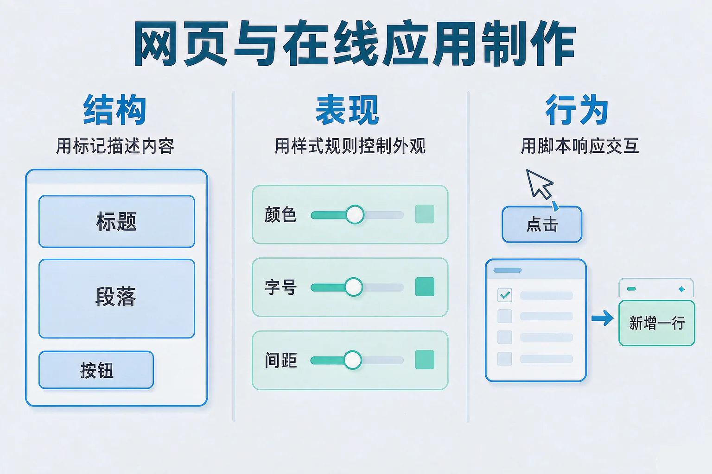
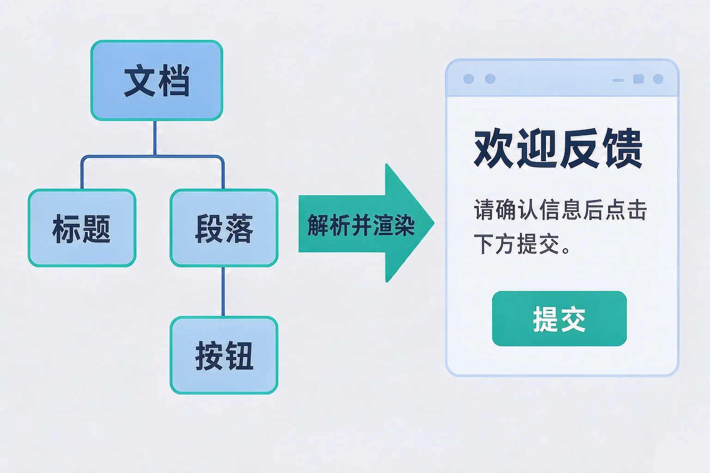
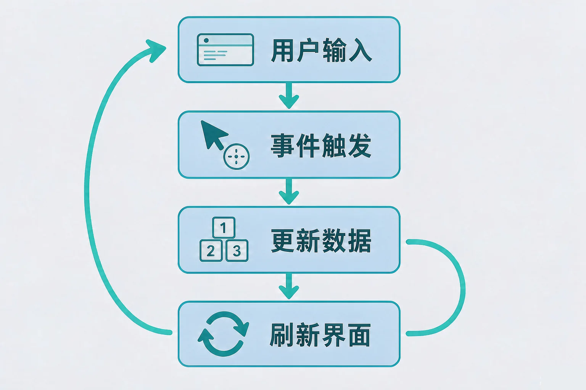

Gallery
v1.0.0 · skill v7.22.0
初中七年级 · 互联网应用与创新
一句「做一个登记页面」的需求，怎样变成能填、能交、能立刻看到结果的在线应用？

选一个你真正好奇的问题，后面的实验都会围着它转。
选择或输入后，这节课会围绕你的问题展开。
先凭直觉选一个，选完立刻看到解释——错了也没关系，正好知道要重点听哪里。
1. 下面哪一组的说法是正确的？
三者分工不同：结构说明这一段是什么，表现决定它长什么样，行为负责响应操作。错因提醒：把三者混在一起，是这一课最常见的错误，也是后面改一处坏一处的根源。
2. 把一篇文章的所有字都放大加粗，最合适的做法是：
外观归表现管。改样式不动内容，这就是三层分开写的好处。
3. 点了按钮之后界面没有变化。下面哪种判断更合理？
改了数据不等于界面会跟着变，这个区别先记在心里，等下做实验时你会亲眼看到数据条数和界面条数不一致。
为什么要学这一课？你已经知道网页是靠网络取回来的，但真正的问题出现了：取回来的那一堆内容，凭什么能在屏幕上变成有标题、有段落、有按钮的页面？所以我们需要把你手上的一句需求（要登记书名和日期）翻译成计算机看得懂的结构，再配上外观和交互，这就是做网页这件事的全过程。
结构
用标记描述内容：这一段是标题、是段落、是一份列表，还是一个可以填写的输入框。它不负责好不好看。
表现
用样式规则控制外观：颜色、字号、间距、边框。换一套规则，内容一个字都不用改。
行为
用脚本响应操作：监听点击与输入，读写页面里的节点，把结果反馈给用户。

🔍 深层理解 换个角度再看一遍这件事，看看能不能说出背后的原理。
拆开它：任何一个页面都能拆成这份清单：有哪些内容块（结构）、它们长什么样（表现）、能做什么操作（行为）。先列清单，再动手写。
比较它：三层混在一起写，改颜色可能改坏结构；三层分开写，改外观不碰内容，内容还能被朗读软件正确读出来。
迁移它：做幻灯片、排一份通知也是这样：先定内容层级，再定样式。先想清楚「这是什么」，再想「它长什么样」。
左边点卡片，右边的文档树会跟着长，下面的预览区会立刻渲染出对应的样子。注意容器和子节点的先后顺序。
结构卡片池
文档树（实时）
预览区（按当前结构渲染）
脚本通过文档树读写页面。你点一下按钮，屏幕上的变化背后其实走了四步。

两个最容易搞混的地方。第一，误认为改了数据界面就会自动变——不会，必须有人明确地刷新它。第二，反过来在界面上直接做手脚而不改数据——看起来对了，但下一次刷新时这点改动就消失了。判断标准很简单：数据变了，界面必须跟着变；界面变了，数据也必须跟着变。
顺带说一件重要的事：数据是先到你的浏览器、再发到服务器去的，所以用户能改到的东西都不算数。前端校验是为了让人更快看到提示，真正说了算的校验必须放在服务端再做一遍。
添加几条书目，盯住四个数字。然后把「刷新界面」开关关掉再加一条，看看会发生什么。
输入与操作
当前界面（按数据渲染）
题目：一个登记页面，点「提交」之后界面毫无变化。作者说样式写得没问题。请按四步链路定位问题，并说明你的排查顺序。
第一步 看清现象：点击有反应，说明事件没有被完全丢掉；界面不变，说明第四步没有发生。
第二步 查第二步（事件）：确认处理过程确实绑在了按钮上，并且被调用了。
第三步 查第三步（更新数据）：在处理过程里打印数据，发现条数根本没变——原因是在中途访问了一个并不存在的节点，执行到那里就停住了。
第四步 修复并自查：先确认要操作的节点在文档树里真的存在，再更新数据，最后刷新界面。顺序不能颠倒：数据没更新就刷新，刷出来的还是旧内容。
最常见的错误判断是「界面不变，那一定是外观的问题」，然后一头扎进颜色和字号里找，越找越远。另一个常见错误是把顺序做反：先刷新界面再更新数据，结果每次看到的都是上一次的内容。记住这条排查顺序：事件接上了吗 → 数据变了吗 → 界面刷新了吗，从前往后查，一步都不会漏。
先凭直觉选一个，选完立刻看到解释——错了也没关系，正好知道要重点听哪里。
1. 下面哪句话是正确的？
数据是依据，界面是它的呈现，两者之间需要一次明确的刷新。错因提醒：把「数据变了」和「界面变了」搞混，是这一课最高频的常见错误，排查时一定要分开看。
2. 有人把页面上的字直接改掉，让统计看起来是对的，但数据里没有变化。最可能发生的是：
界面是按数据渲染出来的。绕过数据改界面，等于在沙滩上写字。错因提醒：误认为「看起来对就是对的」，是初学者很容易踩的坑。
3. 一个报名页面只在提交前做了校验。有人说这样已经很安全了，因为填错就提交不了。这个说法：
前端校验的价值是让人更快得到反馈；但数据最终要交到服务器上，那里必须再检查一遍。错因提醒：误认为「界面上挡住了就等于挡住了」，是安全设计上最典型的错误判断。
需求：登记书名、借出日期，联系方式可填可不填。请先定下规则，再故意填错几次，看看你的规则能不能都拦住。
写下来，说给同桌听：你定了几条规则？每条规则拦住的是哪一类错误？为什么联系方式要设计成选填，而不是必填？
先凭直觉选一个，选完立刻看到解释——错了也没关系，正好知道要重点听哪里。
1. 一个活动报名页面，同学们反映「填了看不到自己报上名没有」。最该补上的是：
用户需要看到自己操作的结果，这属于行为这一层的职责。按钮大小和背景颜色是表现层的事，解决不了「没有反馈」这个问题。
2. 有人把别人的作文整段复制到自己的班级主页上，还删掉了原作者的名字。下面评价正确的是：
做在线应用不只是技术问题，还要守住责任：注明来源、尊重他人成果，这是数字公民的基本要求。
3. 同学设计的登记页面要求填写身份证号和家庭住址。最合理的改进建议是：
能说明「为什么需要它」，才值得收集。与目的无关的信息，多收集一项就多一份泄露风险。错因提醒：误认为「字段越多越专业」，是设计在线应用时常见的一种错误观念。
回到开头那张纸：把纸质登记变成在线应用，改的不只是一张脸的样式。结构上要列出书名、日期、联系方式这几个内容块；表现上让它们排得清楚好填；行为上接住每一次提交、逐条校验、给出反馈。三块都做到位，这张纸才算真正搬到了网上。
给别人讲一遍：请用「结构、表现、行为、刷新」这四个词，说清楚点一次提交之后，从你按下按钮到看到结果经历了什么。
三层练习，做完第一、二层就算通关；第三层留给愿意继续探索的同学。
⭐ 基础巩固（必做）
⭐⭐ 能力应用（必做）
⭐⭐⭐ 迁移挑战（选做）
左边是学它之前要先会的，右边是学会之后可以继续探索的，下面是同一领域的伙伴知识。
图谱正在加载：首次进入需下载知识索引（约 1–3 秒），加载完成后本行会自动消失。